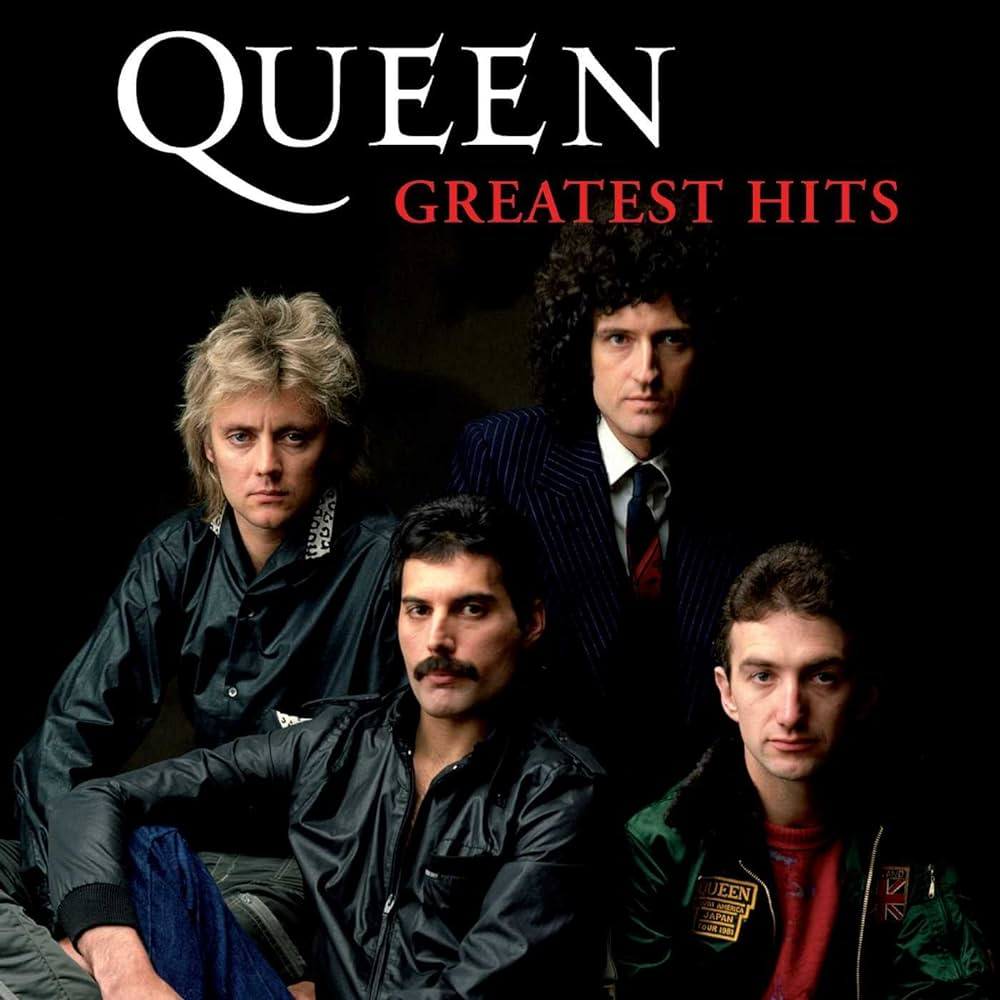
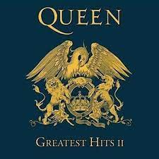

Members:
- Freddie Mercury
- Brian May
- Roger Taylor
- John Deacon
Queen are a British rock band formed in London in 1970 by Freddie Mercury (lead vocals, piano), Brian May (guitar, vocals), and Roger Taylor (drums, vocals), later joined by John Deacon (bass). Their earliest works were influenced by progressive rock, hard rock, and heavy metal, but the band gradually ventured into more conventional and radio-friendly works by incorporating further styles, such as arena rock and pop rock. Queen have released 15 studio albums, 10 live albums, 16 compilation albums, 2 soundtrack albums, 2 extended plays, 73 singles, and 7 promotional singles and have sold over 125,216,910 albums. The best-selling album by QUEEN is GREATEST HITS I, which sold over 25,000,000 copies.
| Album name | GREATEST HITS I (1981) | MADE IN HEAVEN (1995) | GREATEST HITS II (1991) | THE MIRACLE (1989) | A NIGHT AT THE OPERA (1975) | NEWS OF THE WORLD (1977) | A KIND OF MAGIC (1986) | INNUENDO (1991) |
|---|---|---|---|---|---|---|---|---|
| Sold copies | 25,000,000 | 20,000,000 | 19,000,000 | 9,500,000 | 6,000,000 | 5,295,218 | 2,419,216 | 2,201,304 |
| Album covers |  | |
 | |
|
|
|
|